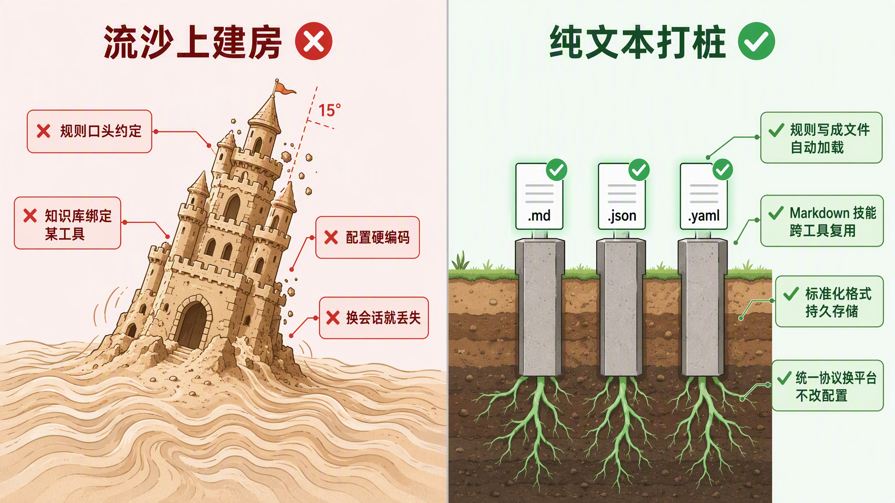

让每个人都看懂：部署一个 AI Agent 到底在管什么
无论你是使用 Agent 的个人、推动团队协作的管理者、负责运维的工程师，还是制定评测标准的 AI 中台负责人，这份手册帮你快速定位自己需要关注的资产、理解自己的职责、掌握实操方法。
框架是他们的，资产是你的
OpenAI、Anthropic、Google 每年数十亿美元砸在模型训练与推理基础设施上，WorkBuddy 这样的传统大厂用成熟工程资源做通用平台。那是地基，不由我们来建。但很多团队一眼就看出脚下是流沙，却花巨量精力去压地基。自建模型网关、自研评测平台、从零搭知识库引擎。做了半年还没压稳，后来者什么都没做，直接用上了大厂更好的地基。回头一看，自己那套连维护都成了负资产。真正属于你的从来不是地基，是桩。业务规则写成独立文件，知识用标准化格式持久存储，技能用纯文本打包，换什么 Agent 都能平移复用。手册列的 33 项资产就是你的桩。

一层一层搭起来
从上到下：用户看到什么 → 背后靠什么支撑 → 安全如何贯穿始终。
33 项资产如何构成一个完整的 Agent
8 大类资产按层级关系组织，从用户触达到底层基础设施，再到质量保障闭环。
📐 结构图较宽，手机上已收起；下方 8 张分类卡片包含同样的全部内容。
核心行为
5 项知识与记忆
4 项能力与工具
6 项AI 引擎
4 项安全与权限
3 项评测与质量
4 项基础设施
4 项版本与发布
3 项落地形态：每个都对应一项实战资产
上面 33 项资产是"要管什么"的分类学。下面是部分资产在实际工具中的落地形态。以下仅为举例，不是封闭清单。Assets 的具体形态随工具生态持续演进，但核心不变：资产必须是纯文本、跨工具可平移的独立文件。
告诉 AI"按这个流程走"
AI 连接外部工具的标准化插座
"当 X 发生时，自动执行 Y"
AI 每次启动必读的约束文件
一键触发的高频操作入口
沉淀下来的高质量提问方式
Hooks 和定时任务背后的可执行资产
用可执行用例锁住质量标准
| 桩 | 所承载的资产（手册类别） | 编号 |
|---|---|---|
| Skills | 核心行为 → 能力说明书 / 专家人设 · 能力与工具 → 技能库 | #04, #09 |
| MCP | 能力与工具 → 外部连接器 · 安全与权限 → 密钥凭证 | #10, #24 |
| Hooks | 安全与权限 → 安全护栏 / 审计日志 · 评测与质量 → 自动化 | #06, #25, #27 |
| Rules | 核心行为 → 全局指令 · 知识与记忆 → 上下文文件 | #01, #08 |
| Commands | 核心行为 → 快捷指令 · 能力与工具 → 工作流编排 | #02, #14 |
| Prompts | 核心行为 → 快捷指令 · AI 引擎 → 指令组装 | — |
| Scripts | 安全与权限 → 安全护栏 · 基础设施 → 定时任务 | — |
| Tests | 评测与质量 → 评测数据集 / 指标体系 | — |
不同角色，各自关注什么？
每个人不需要管全部 33 项资产。找到你的角色，聚焦你需要关注的那几项。
个人使用者
你只需要关心一件事：Agent 能不能帮我把活干好？
了解 Agent 能做什么，自定义人设语气，用快捷指令一键完成高频操作。
团队协作
核心目标：让所有人用同一个 Agent 时，体验一致、知识共享、效率倍增。
建立团队公共知识库，统一行为基线和人设风格，共享技能和工作流。
维护者 / 运维
你是 Agent 的"保姆"，确保它 7x24 稳定运行，出问题能快速恢复。
关注服务器健康、模型网关可用性、工具连接器连通性、密钥凭证安全。
评测效果评价者
你是 Agent 质量的最终裁判，你说了算"这个版本能不能上线"。
三件套：评测数据集、指标体系、评测报告。为每个资产设定基准线。
33 项资产，逐项拆解
每项资产对 5 类角色的具体作用 + 基准线参考。悬停标签切换分类，点击可锁定。
| 资产对象 | 个人 | 团队协作 | 维护者 | 迭代者 | 评测者 | 基准线参考 |
|---|---|---|---|---|---|---|
全局指令基础 System Prompt | 决定回答风格与理解深度 | 统一行为基线 | 第一排查项 | 核心变更需记录动机 | 变更前后对比 | 任务完成率>=85%；安全拦截100% |
快捷指令基础 Prompt Templates | 高频操作一键触发 | 标准化指令库 | 监控使用率 | 变更需有记录 | 执行成功率 | 覆盖>=80%高频场景；成功率>=95% |
专家人设基础 Persona / SOUL | 语气影响信任感 | 品牌一致性 | 客诉判断参照 | 验证满意度影响 | 主观评分 | 满意度>=4.0/5 |
能力说明书基础 Agent Manifest | 建立正确预期 | 新成员了解边界 | 运维第一参考 | 升级时同步更新 | 按声明设计用例 | 覆盖率100%；文档与行为一致 |
安全护栏基础 Guardrails | 安全底线 | 企业合规屏障 | 误拦/漏拦调优 | 新威胁响应 | 红队通过率 | 安全拦截100%；误拦率<=2% |
| 资产对象 | 个人 | 团队协作 | 维护者 | 迭代者 | 评测者 | 基准线参考 |
|---|---|---|---|---|---|---|
知识库基础 Knowledge Base | 个性化知识 | 公共知识沉淀 | 过期检测 | 增删改有记录 | 召回率、忠实度 | 召回率>=90%；忠实度>=95% |
记忆库进阶 Memory System | 跨会话记住偏好 | 项目级记忆延续 | 容量、隐私合规 | 架构演进 | 召回准确率 | 准确率>=90%；隐私合规100% |
业务数据库进阶 Database | 个人数据持久存储 | 共享数据层 | 备份、性能调优 | 结构变更可回退 | 读写准确性 | 可用性>=99.9%；延迟<=50ms |
上下文文件基础 Context Files | 理解工作环境 | 协作约定数字化 | 加载性能 | 协议演进 | 指令遵循率 | 加载<=200ms；遵循率>=90% |
| 资产对象 | 个人 | 团队协作 | 维护者 | 迭代者 | 评测者 | 基准线参考 |
|---|---|---|---|---|---|---|
技能库进阶 Skills | 安装/自定义技能 | 共享最佳实践 | 冲突检测 | 向后兼容 | 成功率 | 成功率>=95% |
外部连接器进阶 MCP Services | 连接外部工具 | 统一管控集成 | 连接稳定性 | 协议兼容 | 调用成功率 | 可用性>=99.5% |
命令行工具进阶 CLI Tools | 本地效率工具 | 跨机器一致 | 分发更新 | 兼容旧脚本 | 跨平台兼容 | 通过率100% |
原子能力库高级 Capability Library | 多模态即调即用 | 统一封装计费 | 故障降级 | 逐步放量 | 质量评分 | 可用性>=99% |
网络搜索进阶 Web Search | 实时获取信息 | 信息源管控 | 缓存策略 | 多源聚合 | 引用准确性 | 可用率>=99% |
工作流编排高级 Workflow | 流程自动化 | 标准流程固化 | 失败重试 | 逐步放量 | 完成率 | 完成率>=90% |
| 资产对象 | 个人 | 团队协作 | 维护者 | 迭代者 | 评测者 | 基准线参考 |
|---|---|---|---|---|---|---|
AI 大脑+网关高级 LLM & Gateway | 智商上限 | 智能分配模型 | 限流、负载均衡 | 逐步放量 | 跨模型对比 | 可用性>=99.9%；延迟<=3s |
推理引擎高级 Agent Framework | 规划与纠错 | 统一推理方式 | 死循环检测 | 全量回归 | 纠错率 | 完成率>=80% |
智能检索高级 AI Retrieval | 按画像匹配 | 跨系统搜索 | 召回率监控 | 模型升级对比 | 检索准确率 | 召回率>=85% |
指令组装进阶 Prompt Engine | 影响精准度 | 共享组装规范 | 注入正确性 | 覆盖全场景 | 质量影响 | 错误率=0 |
| 资产对象 | 个人 | 团队协作 | 维护者 | 迭代者 | 评测者 | 基准线参考 |
|---|---|---|---|---|---|---|
权限管控进阶 RBAC | 访问边界 | 角色分级 | 账号管理 | 权限演进 | 越权测试 | 越权=0 |
审计日志基础 Audit Logs | 历史回溯 | 全程可追溯 | 合规留存 | 格式兼容 | 完整性 | 记录率100% |
密钥凭证进阶 API Keys | 费用控制 | 凭证轮转 | 泄露应急 | 加密升级 | 有效性 | 泄露=0；轮转<=90天 |
| 资产对象 | 个人 | 团队协作 | 维护者 | 迭代者 | 评测者 | 基准线参考 |
|---|---|---|---|---|---|---|
评测数据集进阶 Eval Datasets | 提交测试用例 | 统一衡量尺子 | 标注质量 | 配套新用例 | 核心对象 | 覆盖>=90%场景 |
指标体系高级 Eval Metrics | 质量信号 | 质量共识 | 计算准确性 | 新维度 | 核心对象 | 误差=0 |
评测报告进阶 Reports | 了解趋势 | 决策依据 | 自动化 | 增益分析 | 核心产出 | 自动化率>=90% |
质量标杆库进阶 Showcase Library | 个人水准参照 | 团队共同标准 | 定期更新 | 标杆迭代 | 核心参照 | 每里程碑>=1 件入库 |
| 资产对象 | 个人 | 团队协作 | 维护者 | 迭代者 | 评测者 | 基准线参考 |
|---|---|---|---|---|---|---|
服务器容器进阶 Environment | 环境一致 | 环境统一 | 核心对象 | 代码化 | 排除干扰 | 回退<=5min |
对话日志基础 Logs | 历史回溯 | 行为分析 | 脱敏合规 | 格式兼容 | 评测素材 | 完整率100% |
监控告警进阶 Monitoring | 可用性感知 | 健康看板 | 核心对象 | 重点观察 | 触发评测 | 发现<=5min |
定时任务基础 Cron | 定时报告 | 统一调度 | 漏执行监控 | 评估影响 | 成功率 | 成功率>=99.9% |
| 资产对象 | 个人 | 团队协作 | 维护者 | 迭代者 | 评测者 | 基准线参考 |
|---|---|---|---|---|---|---|
版本标签基础 Version Tags | 版本选择 | 统一基线 | 快速回退 | 核心对象 | 版本对比 | 回退100% |
变更日志基础 Changelog | 判断升级 | 信息同步 | 故障排查 | 核心对象 | 关联分析 | 覆盖100% |
功能开关进阶 Feature Flags | 体验新功能 | 灰度节奏 | 清理过期 | 并行控制 | A/B对比 | 生效<=1min |
抽象概念在具体工具里长什么样？
33 项资产是抽象分类。在实际工作中，它们对应到具体的文件、配置、服务。以下按主流工具逐项映射，帮你从"概念理解"落地到"动手操作"。
| 资产 | Claude Code | Cursor / QwenWork | 企业 AI 中台 | 个人要维护什么 |
|---|---|---|---|---|
| 全局指令 | CLAUDE.md | .cursorrules AGENTS.md | System Prompt 配置页 | 通常由团队统一管理。个人可在本地 CLAUDE.md 补充偏好。 |
| 快捷指令 | /slash commands | Skills / 自定义指令 | Prompt 模板库 | 个人可创建高频操作的快捷指令。 |
| 专家人设 | CLAUDE.md 人格段落 | SOUL.md | Agent 人设配置 | 个人可调整语气偏好。 |
| 安全护栏 | 内置安全层 + permission prompts | 内容过滤配置 | Guardrails 服务 | 个人不需要维护，由安全团队配置。 |
| 知识库 | 项目文件自动索引 | @codebase / RAG 文档库 | 向量数据库 | 个人可上传私有文档。 |
| 记忆库 | MEMORY.md / USER.md | Memory 系统 | 用户画像服务 | Agent 自动维护。个人通过对话告诉 Agent 偏好。 |
| 上下文文件 | CLAUDE.md / AGENTS.md | AGENTS.md / USER.md | 项目配置中心 | 个人可编辑项目根目录的上下文文件。 |
| 资产 | Claude Code | Cursor / QwenWork | 企业 AI 中台 | 个人要维护什么 |
|---|---|---|---|---|
| 技能库 | 内置工具集 | Skills 目录 / SKILL.md | 技能市场 | 个人可安装/卸载/创建技能。 |
| 外部连接器 | MCP Server | MCP 配置 / Connector | 集成平台 / API Gateway | 个人可配置 MCP 连接自己的工具。 |
| 命令行工具 | Bash / git / npm | Terminal 集成 | CI/CD Pipeline | 不需要维护。Agent 自动调用。 |
| 原子能力库 | 内置图片理解 | ImageGen / TTS | DALL-E / 语音 API | 不需要维护。由平台接入。 |
| 网络搜索 | 内置搜索 | WebSearch | Bing / Google API | 不需要维护。 |
| AI 大脑+网关 | Claude 模型 | 模型选择器 | LiteLLM / 自建网关 | 个人可选模型，网关由运维管理。 |
| 推理引擎 | 内置 ReAct 循环 | Agent 模式 | LangGraph / AutoGen | 不需要维护。由工程团队管理。 |
| 资产 | Claude Code | Cursor / QwenWork | 企业 AI 中台 | 个人要维护什么 |
|---|---|---|---|---|
| 权限管控 | permission prompts | RBAC 配置 | IAM / RBAC | 不需要维护。遵守规则即可。 |
| 密钥凭证 | .env 环境变量 | API Key 管理 | Vault / KMS | 个人管理自己的 API Key。 |
| 监控告警 | Anthropic 监控 | 内置健康检查 | Prometheus + Grafana | 不需要维护。异常时反馈给运维。 |
| 版本标签 | Anthropic 版本 | 产品版本号 | Git Tag / SemVer | 个人选择版本。版本管理由迭代者负责。 |
| 功能开关 | — | 实验性功能开关 | Feature Flag 平台 | 个人可开关实验性功能。 |
产品经理需要重点维护哪些资产？
AI 时代 PM 不再当"二传手"——不等别人实现。PM 对着 AI 把需求说明白、把验收标准讲清楚，让 AI 充当交互、开发、测试。PM 只做三件事：说清楚要什么、推进度、查结果。
项目 Brief（brief.md）
项目上下文（AGENTS.md）
功能规格（specs/*.md）
异常场景（同 spec 文件）
验收清单（checklist/*.md）
发布判定（你说了算）
三个角色，三份清单
33 项资产不需要每个人都管。以下是三个关键角色的"最小维护清单"：只维护这些，就能让 Agent 从"能用"变成"好用"。
个人记忆库（Memory）
快捷指令（Prompt Templates）
个人知识库（Knowledge Base）
团队知识库（Team Knowledge Base）
共享技能库（Shared Skills）
工作流编排（Workflow）
权限模型（Permission / RBAC）
全局指令（System Prompt）
项目 Brief（brief.md）
项目上下文（AGENTS.md）
功能规格（specs/*.md）
异常场景（同 spec）
验收清单（checklist/*.md）
发布判定
评测 / 基准线 / 迭代 / 标杆
给 AI 中台负责人和团队管理者的四张实操卡。
如何评测？
基准线怎么定？
不能拍脑袋。
如何迭代？
质量标杆库
自动评分只能回答"及格了吗"，标杆库回答的是另一个问题："好"应该长什么样？把团队历史上公认的最高质量产出物归档保存，记录完整产出过程——既是新人学习的范本，也是评测标准活的参照系。
标杆入库简表
| 产出物 | 评分 | 关键亮点（为什么好） | 录入人 |
|---|---|---|---|
| __ | __ /4.0 | __ |
产出物质量标准模板（评分卡）
评测基础设施回答了"跑分多少"，但 PM 还需要回答另一个问题：AI 写的这个东西，到底能不能用？下面的五维评分卡把抽象判断变成可逐项打勾的分数。里程碑节点使用，不与日常三关验收重复。
五维评分卡
| 维度 | 权重 | 检查什么 | 4 分锚定示例 | 2 分锚定示例 |
|---|---|---|---|---|
| 代码质量 | 25% | 零报错、lint 全过、复杂度 < 15 | 构建一次通过，零 warning | 能跑但有 3 处 console.log 残留 |
| UI 还原度 | 25% | 对照 Design Tokens，偏差 < 3 项/屏 | 间距/颜色/圆角全部命中 Token | 主色偏差 #3，两处圆角值不对 |
| 交互完整性 | 20% | 空态/加载/错误/边界全有处理 | 6 种边界态全部覆盖并可用 | 只有 happy path，断网时白屏 |
| 安全性 | 15% | 无密钥泄露、输入校验、越权检查 | 所有外部输入有校验，无硬编码凭据 | 调试日志打印了 API Key |
| 一致性 | 15% | 风格匹配现有代码，无突兀引入 | 命名/缩进/组件复用与项目一致 | 新文件使用了完全不同的缩进风格 |
评分记录模板（可复制）
| 维度 | 权重 | 得分 | 加权 | 扣分原因 |
|---|---|---|---|---|
| 代码质量 | 25% | __ /4 | __ | |
| UI 还原度 | 25% | __ /4 | __ | |
| 交互完整性 | 20% | __ /4 | __ | |
| 安全性 | 15% | __ /4 | __ | |
| 一致性 | 15% | __ /4 | __ | |
| 加权总分 | __ /4.0 · 结论：通过 / 修正后复评 / 打回 · 评阅人：__ · 日期：__ | |||